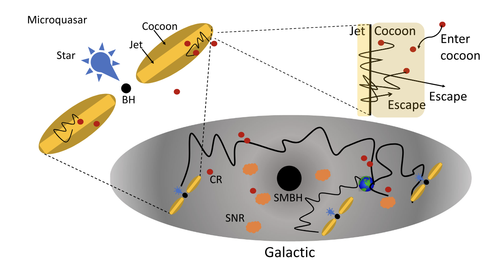
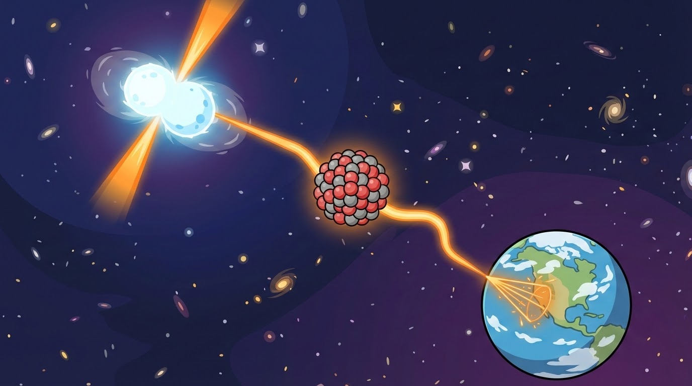
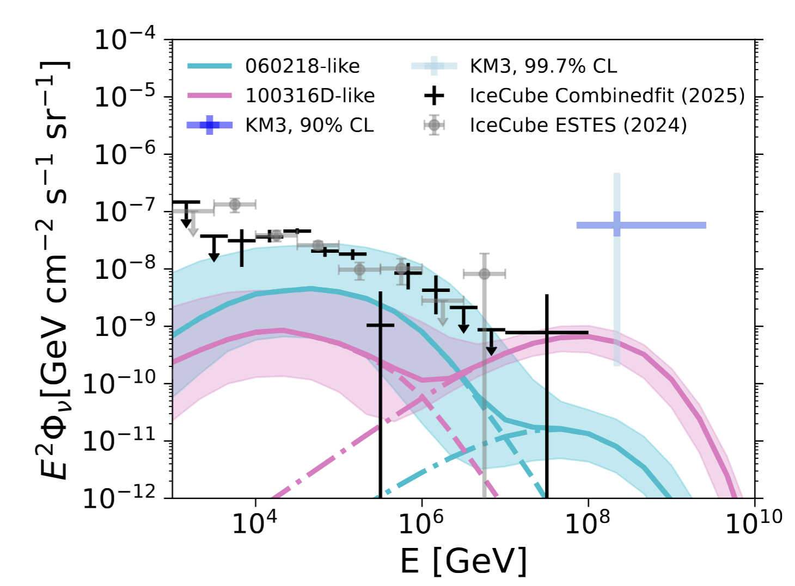
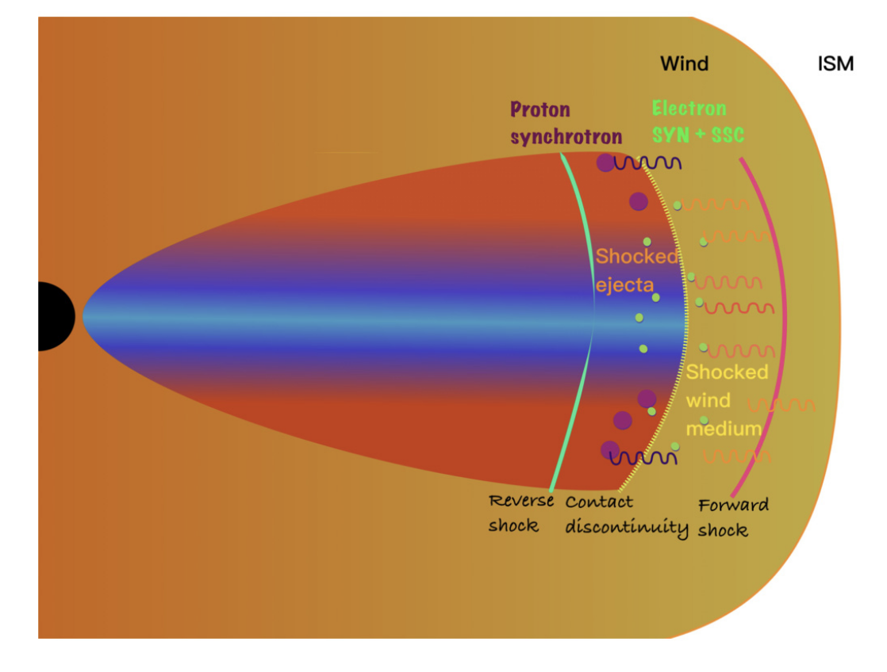

1. Microquasar jet-cocoon systems as PeVatrons
B. Theodore Zhang, S. S. Kimura, K. Murase.
Phys. Rev. D 112, 123015 (2025) | arXiv:2506.20193
Abstract: We propose that shear acceleration within large-scale microquasar jet-cocoon structures can naturally explain the Galactic cosmic ray spectrum up to the knee (~3 PeV), offering a unified picture for CR origins.
摘要：提出了微类星体大尺度喷流-茧结构中的剪切加速机制，能够自然地解释银河系宇宙线能谱至“膝”区（~3 PeV）的观测结果，为银河系宇宙线起源提供了统一的物理图景。

2. Ultraheavy Ultrahigh-Energy Cosmic Rays
B. Theodore Zhang, K. Murase, N. Ekanger, M. Bhattacharya, S. Horiuchi.
Phys. Rev. Lett. 136, 181002 (2026) | arXiv:2405.17409
Abstract: We investigate the propagation of ultraheavy (UH) nuclei at extreme energies (≲ 300 EeV), showing their energy-loss lengths are significantly longer than intermediate-mass elements, making them compelling candidates for events like the Amaterasu particle.
摘要：研究了超重核宇宙线在极端能量（≲ 300 EeV）下的传播，指出其能量损失长度显著长于中等质量核，极有可能是 Amaterasu 粒子等极端高能事件的来源。

3. A Unified Framework for 10 TeV to EeV Diffuse Neutrino Sky and KM3-230213A
S. Yu, B. Theodore Zhang.
Astrophys. J. Lett. 1002, L45 (2026) | arXiv:2602.02372
Abstract: Developed a unified framework to explain the diffuse neutrino sky spanning from 10 TeV to EeV energies, with implications for the KM3-230213A event.
摘要：建立了一个统一的多信使框架，解释了从 10 TeV 至 EeV 能段的弥散中微子辐射，并探讨了其对中微子事件 KM3-230213A 的启示。

4. The origin of very-high-energy gamma-rays from GRB 221009A
B. Theodore Zhang, K. Murase, K. Ioka, B. Zhang.
JHEAp 45, 392-408 (2025) | arXiv:2311.13671
Abstract: Exploring the VHE gamma-ray origins of the hyper-bright GRB 221009A, revealing the crucial role of reverse shock proton synchrotron emission in accelerating protons to extreme energies in the early afterglow phase.
摘要：探讨了极亮伽马暴 GRB 221009A 的甚高能（VHE）伽马射线起源，揭示了反向激波质子同步辐射在早期余辉阶段加速质子至极端能量的重要作用。

5. Microquasar Remnants as Pevatrons Illuminating the Galactic Cosmic Ray Knee
B. Theodore Zhang, S. Yu.
arXiv:2602.08940 (2026)
Abstract: Investigating microquasar remnants as a dominant class of Galactic PeVatrons, providing a natural explanation for the cosmic-ray spectrum up to the knee region.
摘要：探讨了微类星体遗迹作为银河系主要PeVatron的物理机制，为宇宙线能谱延伸至“膝”区提供了解释。
6. A Minimal Interpretation of the Galactic Cosmic-Ray Proton and Helium Spectra
F. Aharonian, B. Theodore Zhang.
arXiv:2602.08223 (2026)
Abstract: Proposed a minimal and elegant model to interpret the Galactic cosmic-ray proton and helium spectra across a wide energy range from GeV to PeV.
摘要：提出了一种极简理论模型，以解释从GeV到PeV宽能段范围内的银河系宇宙线质子与氦核能谱。